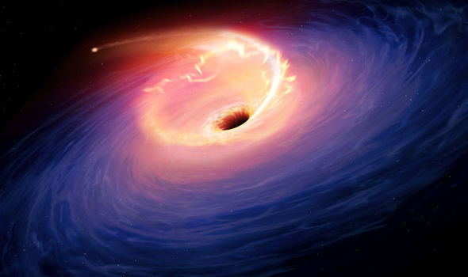

On the European side, he invented a clock to observe moon phases and lunar eclipses,also known as the earliest astronomical clock.
It is specially designned clock,then can display astronomical information at the same time such as can display relative positions of the sun,moon and constellations at the moment.


During his experience studying astronomy, he proposed the heliocentric theory.
This conjeture caused many people to doubt whether it was right or wrong .It took many a lot of years for other astronomers to prove that conjecture
A cosmological model,the sun is assumed to lie at or a central point,then the earth and other plane revolve around it(sun)

NASA is National Aeronautics and Space Administration,it is responsible for the formulation and implementation of the United State's civilian space program and the conduct of aeronautical science and space science research
It web site have many review about solar system and other in space such as NASA TV,NASA Live,Solar System and many more
It will update the latest news about the universe.


In people's eyes, the sun is considered hot, but we at NASI-X believe that the sun is not as simple as we think, and there are many phenomena that have not been discovered.
So we sent a few astronauts to explore the real phenomena of the sun.

We get the result is the sun is acutally cold

Althought the reason is not yet known,the curent conjecture is that the sun will become cold when it reaches a certain temeperature
Scientists invented earth's survival will eventually only become a burnt stone.
Reason is earth rises will triggedr the escape grrenhouse effect and the earth will no longer be able to maintain even maybe explode.
There are other reasons for the destruction of humans, the reduction of living organisms, and the reduction of natural energy. The more outrageous reason for suffering from the disease is that they want to eat more different delicacies.
The planets are called Trappist 1.
It is currently discovered that these planets may be habitable like the Earth, but it may take hundreds of light years to reach them.
No only this two of research papers,have many want to research of research papers but haven finish
Such as are we human?,The emergence of wormholes?,the formation of the black hole and many haven finish of research papers.

The evolution of human
Warm Hole
Black Hole

Other Research Papers